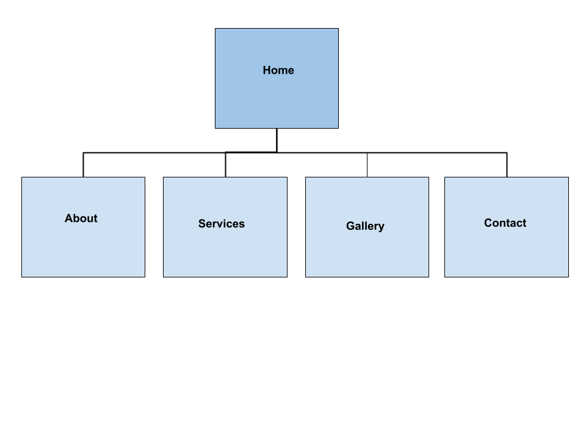
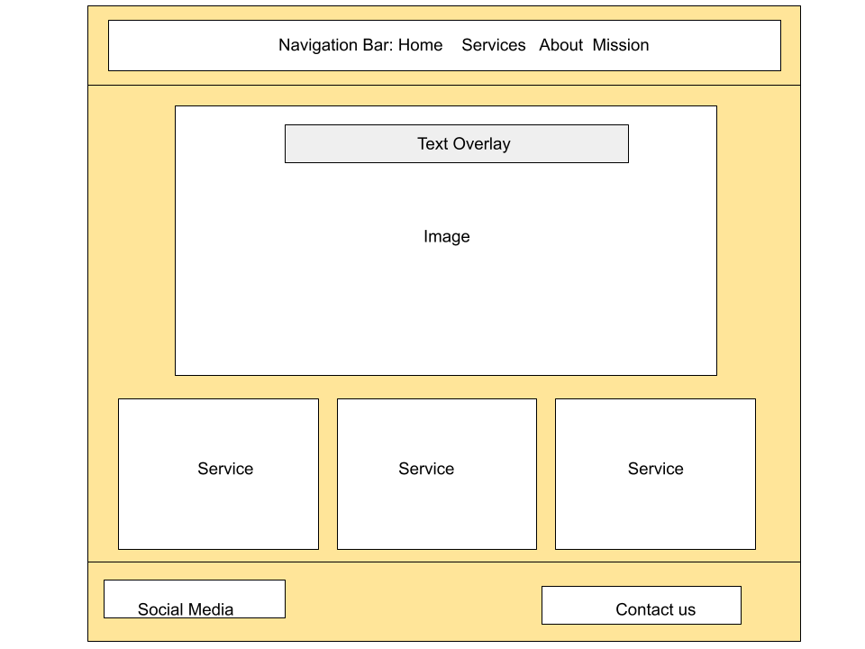

The Style Shaylist is a styling and color coaching service designed to help clients find clarity in their wardrobe. The website serves as a digital storefront for Chroma Collective's styling concepts, focusing on real bodies and real lives.
The audience includes individuals experiencing life transitions, those feeling disconnected from their wardrobe, or anyone wanting to use color theory to build confidence without the pressure to buy more clothes.
The website content will be organized into five primary pages to ensure user-friendly navigation. Below is the organizational structure:
The layout will prioritize a clean, minimalist aesthetic to reflect the clarity of the brand.
The homepage design will feature a prominent header with navigation links, a hero image section titled "Clarity Is the Most Powerful Thing You Can Wear," and sections for featured services.
To implement advanced CSS for my color palettes, I will use the following resource:
W3Schools CSS Tutorial: This resource provides guidance on how to use CSS hex codes to accurately represent color theory palettes on a webpage. Visit W3Schools CSS Guide